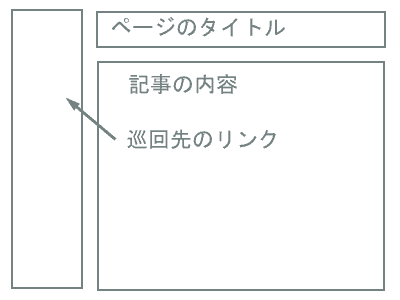
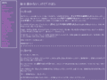
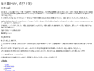
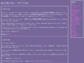

Abstruct
正直、よく使われる割に簡単なので、教えるにも楽そうだと言うことで、まずはこれから初めさせて頂きます
position:absolute;とtop,leftを混ぜ込んだ、自由レイアウトです
blogスタイル
まずは、基本的ですが、ニュースサイトでよく使われる。
こんな感じのデザインの方法から
まずは完成目標をご覧下さい
完成目標
このサイトのおおよそのタグの構成は次のようになっています
<h1>タイトル</h1>
<div id="content">
<h2>日付</h2>
<div class="diary-space" id="任意のid">
文章
</div>
<h2>日付</h2>
<div class="diary-space" id="任意のid">
文章
</div>
</div>
<div id="footer">
<h2>巡回先リンク</h2>
<ul>
<li><a href="アドレス">サイト名</a></li>
<li><a href="アドレス">サイト名</a></li>
<li><a href="アドレス">サイト名</a></li>
……
</ul>
</div>
このページ、スタイルシートを何も当てていないと、サンプル２の様に表示されるのですが、これにスタイルを当てていって、完成を目指します
サンプル２
まずはこれに、次の様に色の設定などを追加していきましょう
/* 基本色設定 */
body {
background-color:#769;
color:#dde;
}
/* リンクの色設定 */
a {
color:#d6d;
}
出来はサンプル３の様に表示されます
背景と文字の色を設定するだけでずいぶんと変わりますが、これにさらにボーダーの設定などを追加してサンプル４の様に変更してして行きます
/* ニュース部分、巡回先のボーダーの設定 */
div#footer,
div#content {
border-style:solid;
border-width:2px;
border-color:#fff;
padding:0.2em;
margin:0.2em;
}
/* 巡回先リストの先頭についている白丸を消します */
ul{
list-style-type:none;
}
さらにこれの細部を詰めていきます
/* ニュースを書く部分 */
div#footer ul {
list-style-type:none;
padding:0.2em;
margin:0.2em;
}
div.diary-space {
border-style:none none dashed none ;
margin-bottom:2em;
}
em {
font-size:1.2em;
font-weight:bold;
}
/* 巡回先リストのタイトル */
div#footer h2 {
font-size:1.0em;
padding:0.2em;
margin:0.2em;
}
ココまで来れば、だいたい配色やフォントの設定は完了しますので、最後にポイントである巡回先リンクの流し込みを行います。
この場合でのポイントは、ここらへん
/* 画面左にリンク集を入れる隙間を入れます */
body {
margin-left:13em;
}
div#footer {
/* リンクバーを画面左に流し込みます */
position:absolute;
top:0.2em;
left:0.2em;
width:10em;
}
これで完成です
同じデザインするにも、書き方は色々とあるのですが、この書き方だと長文の部分にサイズを指定しないので、解像度が変わっても比較的まともに映りやすかったりするので、自分はこの方法で書いています。
巡回先リンクを画面左に密着から、画面右に密着に変更したい場合は
body {
margin-right:13em;
}
div#footer {
position:absolute;
top:0.2em;
right:0.2em;
width:10em;
}
と変更すれば、良かったりします。変更後はこんなかんじですね
変更後
最後に
テーブルタグ仕様でデザインしたときは、HTMLを切り張りして、移動させることになりますが、スタイルシートを使うと２行だけ書き換えれば、それで作業が終わってしまうんですね
スタイルシートでのデザインは、慣れてくると非常に楽にやりたいことが出来る様になりますから
デザインはスタイルシートで追加することに慣れてもらえればいいなぁ…、と思います